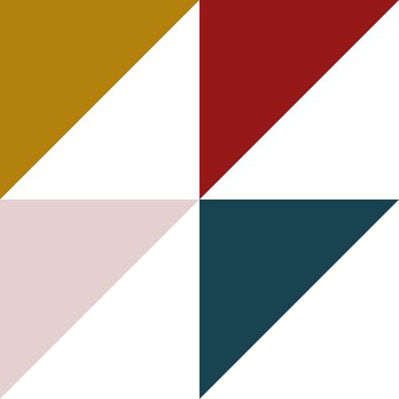
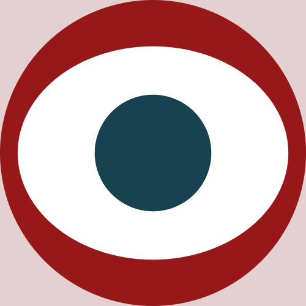
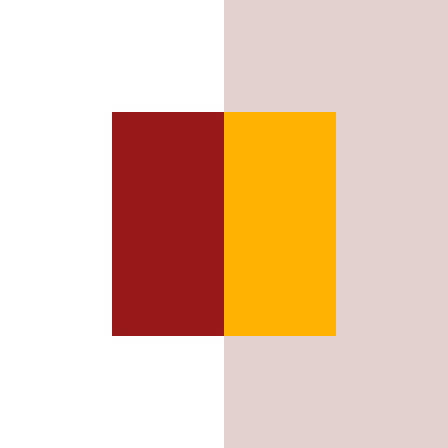
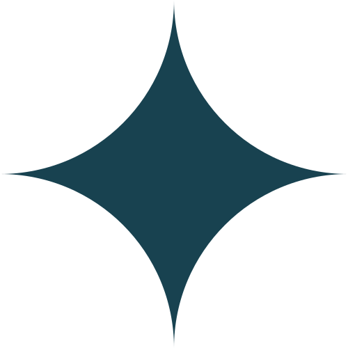
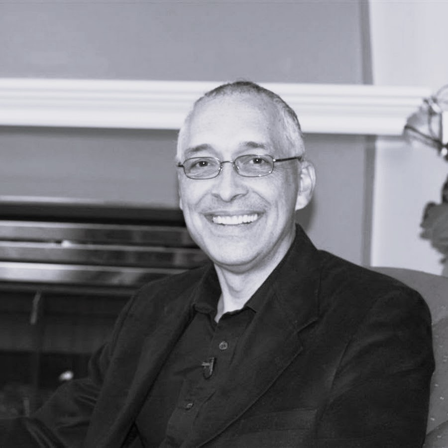

Despre TRE®
TRE® sau Exercițiile de Eliberare a Tensiunii, stresului și traumei sunt o practică somatică, bazată pe corp și activarea mecanismelor interne de autoreglare — pentru oricine suferă de stres, anxietate, traumă sau PTSD.
Ce este TRE®?
TRE® sau Exercițiile de Eliberare a Tensiunii, stresului și traumei sunt o practică somatică, bazată pe corp și activarea mecanismelor interne de autoreglare. Pentru oricine suferă de stres, anxietate, traumă sau PTSD. Aceasta depășește barierele lingvistice, deoarece este un proces care nu necesită vorbirea despre eveniment, sentiment sau problemă.
Constă într-o serie de 7 întinderi ușoare, solicitând mușchii din partea inferioară a corpului și provocând un mic tremur în picioare. Apoi ne întindem pe podea și încurajăm aceste vibrații naturale să se deplaseze prin corp, fără a încerca să le controlăm. Majoritatea oamenilor se bucură de senzație; pentru unii, aceasta poate duce la o eliberare fizică sau emoțională, fără a deveni copleșiți de proces.
„Cultural, suntem învățați să ne ignorăm instinctul. Dar acesta este un element crucial al capacității noastre de a face față și de a ne descurca în situații traumatice.”
— Dr. David Berceli
Beneficii pe toate planurile

Fizic
S-a observat o ameliorare a multor boli inflamatorii precum artrita, fibromialgia, psoriazisul, eczema și sindromul de colon iritabil (IBS), migrenelor/durerilor de cap, durerilor de spate, durerilor de genunchi, durerilor de șold, durerilor de gât, durerilor de umăr și durerilor de ATM (articulația temporo-mandibulară).

Profesional
Practicanții au raportat că se simt mai prezenți în corp, încrezători, sociabili, expresivi, deschiși, mai puțin defensivi, capabili și plini de încredere.

Emoțional
Se observă reducerea încărcăturii sau a sentimentelor de furie, frică, îndoială, îngrijorare, control și anxietate — ceea ce înseamnă un somn mai bun pentru mulți.

Relațional
Oamenii spun că se simt mai iubitori, prezenți, mai puțin reactivi, generoși, comunicativi, mai relaxați în intimitate, grijulii, în siguranță, stăpâni pe sine.

Despre fondator — Dr. David Berceli
Dr. David Berceli, Ph.D., este un expert în domeniile intervenției în traume și rezolvării conflictelor. Este, de asemenea, fondatorul energetic și creativ al Trauma Recovery Services (1998). În ultimii 22 de ani, el a trăit și a lucrat în mai multe țări, oferind ateliere de recuperare a traumelor și proiectând programe de recuperare pentru organizații internaționale din întreaga lume.
David este creatorul seriei unice și inovatoare de TRE® — Exerciții de Eliberare a Traumei, care ajută corpul să elibereze tiparele musculare profunde de stres, tensiune și traumă. TRE® activează în siguranță un mecanism reflex natural de tremur sau vibrație care eliberează tensiunea musculară și calmează sistemul nervos. Când acest mecanism de tremur/vibrație musculară este activat într-un mediu sigur și controlat, corpul este încurajat să revină la o stare de echilibru și homeostază.
David continuă să fie implicat în programele de recuperare a traumelor nu doar pentru a reduce suferința cauzată de traume, ci și pentru că a recunoscut la nivel global că trauma posedă posibilități unice de transformare a individului dacă acesta își urmează procesul de recuperare până la capăt. El a conceput TRE® pe baza ideii fundamentale, susținută de cercetări recente, că stresul, tensiunea și trauma sunt atât psihologice cât și fizice.
Dave a trăit și a lucrat intens în Israel/Palestina, Sudan, Uganda, Kenya, Yemen, Egipt și Liban. Vorbind fluent engleza și araba, el aduce o înțelegere profundă a dinamicii complexe a religiei și obiceiurilor etnice și a dezvoltat procese specifice pentru a permite oamenilor să gestioneze traumele personale și să aducă vindecare și reconciliere între diverse grupuri.
Pentru mai multe informații despre munca sa fascinantă cu armata SUA, precum și despre călătoriile sale în întreaga lume, introducând uneori TRE® în comunități devastate, precum și supraviețuitorilor unor dezastre naturale vă rugăm accesați CLICK AICI.
Fă următorul pas
Descoperă traseul educațional TRE® — de la autoîngrijire și practică personală, până la formare și certificare ca facilitator.